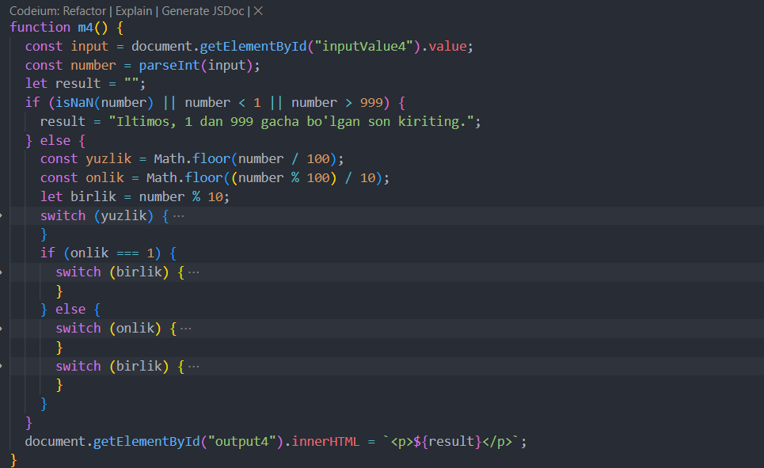

1-masala. 3 ta son ichidan kattasini
aniqlaydigan dastur tuzing.
Output
2-masala 3 ta sondan o‘zaro yig‘indisi eng katta
bo‘ladigan 2 tasini aniqlaydigan dastur tuzilsin.
Output
3-masala.Butun son berilgan. Berilgan sonni “musbat toq
son”, “musbat juft son”, “manfiy toq son”, “manfiy juft son”, “son 0
ga teng” aniqlaydigan dastur tuzilsin.
Output
4-masala. 1-999 oralig‘idagi son kiritiladi. Sonni
so‘zlar yordamida chiqaruvchi dastur yozing.
Output

5-masala.
Oy raqami berilgan, shu oyda nechta kun borligini aniqlovchi dastur
tuzing.
Output
6-masala. Robot faqat 4 ta tomonga ko‘cha oladi.
(“S”-shimol, “J”-janub, “q”-sharq, “g”-g‘arb) va uchta raqamli
komanda: 0-harakatni davom ettir, 1-chapga buril, 2-o‘ngga buril.
Y-robot yo‘nalishi va K komanda berilgan. Berilgan komandani bajarib
bo‘lgandan so‘ng robot holatini aniqlovchi dastur tuzing.